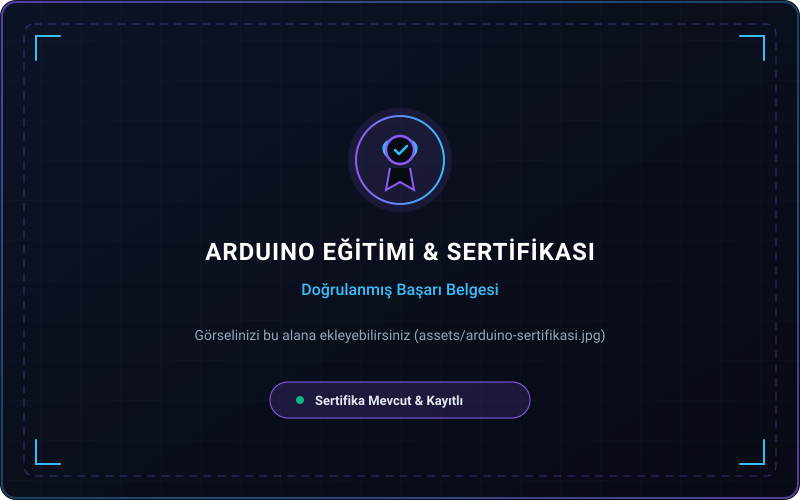

Merhaba, Ben
Zeynep Kılıçarslan.
Teknolojiye olan ilgimi kodlara dönüştürüyor, yazılım geliştirme ve siber güvenlik alanlarında kendimi sürekli geliştiriyorum.
Hakkımda
Yazılım dünyasının temellerini sağlam bir mühendislik vizyonu ile birleştiriyorum.
Merhaba, Ben Zeynep!
Bilgisayar Mühendisliği 2. Sınıf ÖğrencisiGaziantep İslam Bilim ve Teknoloji Üniversitesi Bilgisayar Mühendisliği 2. sınıf öğrencisiyim. Yazılım dünyasına adım attığım ilk günden bu yana hem teorik temelleri hem de pratik uygulamaları derinlemesine öğrenmeye odaklanıyorum.
Düşük seviyeli bellek yönetimi ve sistem mantığını kavramak için C programlama diline, algoritmik düşünceyi hızlı ve etkili prototiplere dönüştürmek için ise Python programlama diline hakimim.
Yazılımın fiziksel dünyayla buluştuğu noktaları deneyimlemek amacıyla Arduino eğitimi aldım ve sertifikamı tamamladım. Donanım ve gömülü sistemlerin işleyiş mantığı, problem çözme perspektifimi zenginleştirdi.
Özellikle siber güvenlik alanına büyük bir ilgi duyuyor, sistemlerin nasıl korunduğunu, zaafiyetlerin nasıl tespit edildiğini ve güvenli kod yazma ilkelerini aktif olarak öğreniyorum. Yeni teknolojiler araştırmayı, analitik düşünmeyi ve özgün projeler üretmeyi tutkuyla sürdürüyorum.
GİBTÜ Bilgisayar Mühendisliği
Gaziantep İslam Bilim ve Teknoloji Üniversitesi'nde 2. sınıf lisans eğitimi.
C & Python Hakimiyeti
Algoritmalar, veri yapıları ve otomasyon scriptleri için aktif kullanım.
Arduino Eğitimi & Sertifikası
Sensör entegrasyonu, mikrodenetleyici programlama ve prototip üretimi.
Siber Güvenlik Eğilimi
Ağ güvenliği, zaafiyet tespiti ve savunma mekanizmalarında aktif gelişim süreci.
Teknik Yeteneklerim
Mevcut teknik uzmanlıklarım ve aktif olarak kendimi geliştirdiğim araştırma alanları.
Programlama Dilleri
Mevcut BecerilerC Programlama
Düşük Seviyeli Sistem & Algoritmaİşaretçiler (pointers), bellek yönetimi (malloc/free), dinamik veri yapıları ve sistem düzeyi algoritmalar.
Python
Genel Amaçlı & OtomasyonHızlı prototipleme, veri manipülasyonu, otomasyon betikleri ve temel güvenlik araçları kurgulama.
Donanım ve Elektronik
Eğitim & SertifikalıArduino
Gömülü Sistemler & MikrodenetleyiciDevre tasarımı, sensör ve aktüatör entegrasyonu, I/O pin kontrolü ve C/C++ tabanlı gömülü kodlama.
İlgi ve Gelişim Alanları
Aktif Öğrenme & GelişimSiber Güvenlik
Temel ağ güvenliği, sistem zafiyetleri, güvenli yazılım geliştirme prensipleri ve savunma yaklaşımları.
Yazılım Geliştirme
Modüler kod mimarisi, sürüm kontrolü (Git/GitHub) ve temiz kod (Clean Code) standartları.
Problem Çözme
Karmaşık mühendislik problemlerini küçük, yönetilebilir ve test edilebilir parçalara ayrıştırma yetisi.
Algoritmik Düşünme
Hesaplamalı karmaşıklık analizi, veri yapıları seçimi ve optimizasyon odaklı mühendislik yaklaşımı.
Eğitim Yolculuğum
Mühendislik temellerini edindiğim üniversite eğitimim ve akademik gelişim sürecim.
Gaziantep İslam Bilim ve Teknoloji Üniversitesi
Bilgisayar Mühendisliği (Lisans)
Gaziantep İslam Bilim ve Teknoloji Üniversitesi Bilgisayar Mühendisliği Bölümü'nde lisans eğitimimi sürdürmekteyim. Eğitim sürecimde bilgisayar bilimlerinin çekirdek disiplinleri, matematiksel modelleme ve yazılım mühendisliği metodolojileri üzerine kapsamlı bir müfredat takip ediyorum.
Sertifikalar & Eğitimler
Tamamlanan resmi sertifikalar ve aktif olarak devam eden uzmanlaşma eğitimleri.
Arduino Eğitimi & Sertifikası
Mikrodenetleyici mimarisi, sensör kullanımı, dijital/analog sinyal işleme ve devre tasarımı odaklı uygulamalı eğitim başarıyla tamamlanmış ve sertifikası alınmıştır.

Siber Güvenlik Eğitimi & Gelişim Süreci
Siber güvenlik ekosisteminde sağlam bir temel inşa etmek amacıyla devam eden teorik ve pratik öğrenim sürecidir. Bu süreç henüz tamamlanmış bir sertifika değil, aktif çalışma ve araştırma alanıdır.
- ▹ Temel Ağ Protokolleri ve Ağ Güvenliği Kavramları
- ▹ Web ve Sistem Zaafiyetleri Temelleri (OWASP)
- ▹ Linux Ortamı ve Terminal Güvenlik Komutları
- ▹ Güvenli Kod Geliştirme Yaklaşımları
Projelerim
Üzerinde çalıştığım, mimarisini kurguladığım ve yakında burada sergileyeceğim çalışmalarım.
Algoritmik & Temel Yazılım Mimarileri
C dili ile bellek yönetimi, dinamik veri yapıları ve hesaplamalı algoritmalar üzerine geliştirilen temel mühendislik uygulamaları.
Otomasyon & Güvenlik Betikleri
Python kullanılarak veri analizi, rutin görev otomasyonları ve temel siber güvenlik tarama testleri için tasarlanan projeler.
Gömülü Sistemler & Sensör Prototipi
Arduino platformu üzerinde çeşitli sensörler ve aktüatörlerle fiziksel ortam verilerini işleyen akıllı gömülü sistem uygulamaları.
Benimle İletişime Geç
Yazılım, teknoloji ve yeni fikirler üzerine iletişim kurmak istersen benimle bağlantıya geçebilirsin.
E-posta Gönder
Projeler, akademik iş birlikleri veya fikir alışverişi için doğrudan bana e-posta atabilirsin.
kilicarslanzeynep82@gmail.comGitHub Profili
Açık kaynak kodlarımı, repolarımı ve sürdürdüğüm yazılım projelerini GitHub üzerinden inceleyebilirsin.
github.com/zeynepklcrslnDoğrudan Mesaj Oluştur
Konu ve mesajınızı yazarak tek tıkla e-posta uygulamanıza aktarın.